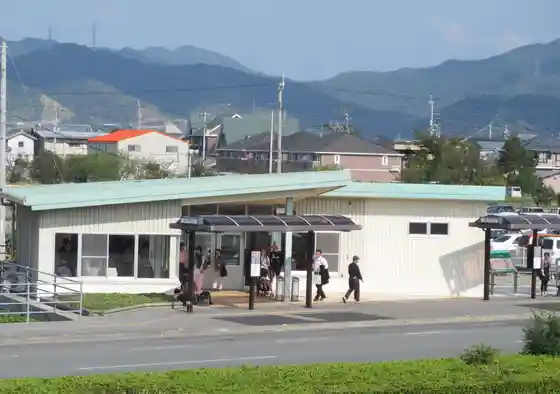
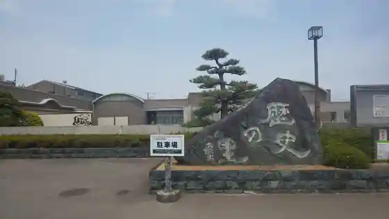

Tsukimigaoka Beach
Matsushige, Tokushima · Official / source link
Toku Shima Airport
Matsushige, Tokushima · 088-699-2831 · Official / source link
Tokushimatokutoku Taminaru
Matsushige, Tokushima · 088-621-2336 · Official / source link

Matsushige Folk History Museum Ningyo Joruri Shibai Museum
Matsushige, Tokushima · 088-699-5995 · Official / source link

Kaga Suno Hashi
Matsushige, Tokushima · Official / source link
Fudo In
Matsushige, Tokushima · Official / source link
Takara Ramen Toku Shima Awa Odori Kuko Mise
Matsushige, Tokushima · Official / source link
Hirotchan
Matsushige, Tokushima · Official / source link
RICH BURGER FACTORY
Matsushige, Tokushima · Official / source link
Chuka Soba Murata Shoten
Matsushige, Tokushima · Official / source link
Niku Sui Senmonten
Matsushige, Tokushima · Official / source link
Sho Ayu
Matsushige, Tokushima · Official / source link
Taraiudon Yama no Se Matsushige Mise
Matsushige, Tokushima · Official / source link
Ri Tsubaki
Matsushige, Tokushima · Official / source link
Men Tokoro Jinnai
Matsushige, Tokushima · Official / source link
Hareruyasuiitsukitchin
Matsushige, Tokushima · Official / source link
Yama Katsu Airport Mise
Matsushige, Tokushima · Official / source link
Buta Taro Airport Mise
Matsushige, Tokushima · Official / source link
Edoya Kohii Matsushige Main Shop
Matsushige, Tokushima · Official / source link
Hareruya Honshakojo Chokubai Mise
Matsushige, Tokushima · Official / source link
Ko Ki Rai Ryokuchi Fureaikyunai Park
Matsushige, Tokushima · Official / source link